Subsections and Details of the IBase Report
The IBase report is broadly divided into the following sections.
IBase Report Section Name |
System Info |
Details |
- Date and the timestamp (in UTC)
- Hostname (full computer name of the Server computer)
- Windows user name
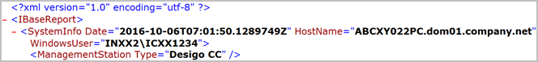 |
IBase Report Section Name |
System Info > Management Station |
Subsections and Their Details |
System Objects (libraries for the Base as well as for the configured extension module libraries), their properties and script library block.
Object Models configured in the system which in turn include information related to stations, devices and properties, drivers, and networks. 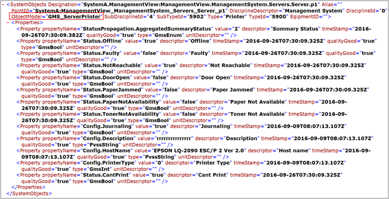 |
IBase Report Section Name |
System Info > Management Station |
Subsections and Their Details |
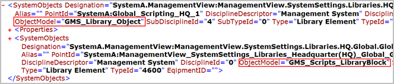 |
IBase Report Section Name |
System Info > Management Station |
Subsections and Their Details |
- GMS_SystemSettings_Folder providing the count of the OMs, whose OM name and display name is same including
- GMS_Library_Object
- GMS_Scripts_LibraryBlock
- GmsScopes
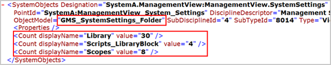 |
IBase Report Section Name |
System Info > Management Station |
Subsections and Their Details |
- GMS_Aggregator providing the count of the following OMs, if the OMs are configured. Otherwise, the IBase report does not display the OM name.
- GMS_Graphics
- GMS_ReportDefinition
- GmsReaction
- GmsMacro
- GMS_Script
- GMS_TVD
- GMS_TLONLINE
- GMS_WS_Calendar
- GMS_WS_Schedule
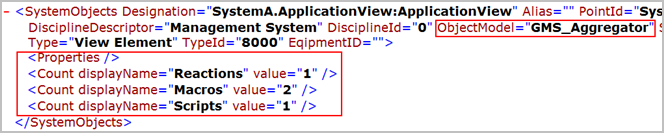 |
IBase Report Section Name |
System Info > Management Station |
Subsections and Their Details |
- For Historic data base daily traffic and fill level, following OM and properties included:
- Gms_HDB_Statistics
- Gms_HDB_Status
- Gms_HDB_Reader_Statistics
- Gms_HDB_Writer_Statistics
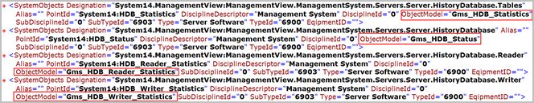 |
IBase Report Section Name |
System Info > Management Station |
Subsections and Their Details |
- For providing number of objects in the memory (for example, number of FEPs or Clients) and their properties, following OMs are included:
- GMS_Server_Station
- GMS_Station
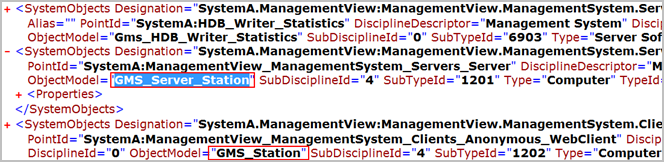 |
IBase Report Section Name |
System Info > Management Station |
Subsections and Their Details |
- GMS_IBase_SystemInformation, for reporting commands related to the IBase configuration (System Information node).
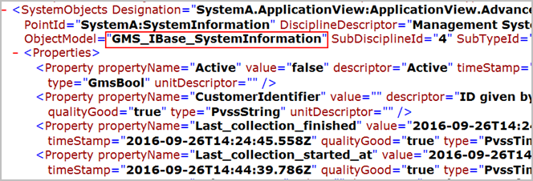 |
IBase Report Section Name |
System Info > Management Station |
Subsections and Their Details |
- Manager Details: Managers (Services) of the system including their default Start Mode
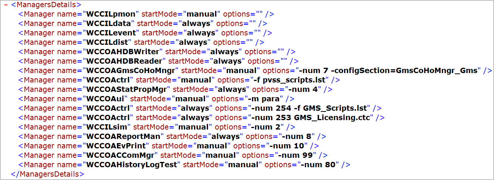 |
- Extensions: Extension module configured along with their version
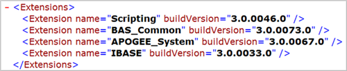 |
- Profiles: Profiles installed (including the default (Base) as well as the extension module-specific profiles along with their location on the disk.
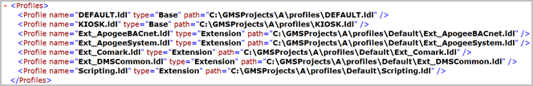 |
IBase Report Section Name |
Installation Information |
Subsections and Their Details |
- Properties
- Management station name and software version
- Name of the currently active project in SMC
- Brand installed
- Languages configured in the active project
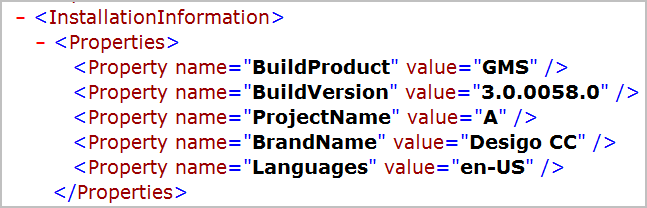 |
- FileSystem
- Provides the checksum report for the files (having file types: .drv, .com, .dll, .exe, .ctc, .lst, .ctl) contained in the active project’s folder, the GMSMainProject folder, and the WinCC-OA. The data is reported under the respective folder in the File System section of the XML. If no value is fetched for a particular property the property itself is not displayed. For example, if value of signing time for a file is not available signing property is not displayed.
- If a folder has no children with the specified file types it is not reported.
- All the files in these folders are parsed and when found are reported with properties and the certificate, when available.
- For each file, the information is reported as the following properties:
- Size of the file (numeric)
- SHA2 checksum (hexadecimal/base64)
- Timestamp for file: Modified, Created, and Signing
- Signature information: CertificateReferenceId (serial number). For a certificate of the file a reference ID is fetched and attached in the 'CertificateReferenceId' property under the file. If no certificate is found in a file, the CertificateReferenceId field is left empty. The additional certificate details are reported in the ‘Certificates’ section. - You can verify the integrity of the Binaries/files by comparing the SHA256Checksum property in the InstallationInformation > FileSystem section of the IBase report with IBase report generated on same build. If the file is tampered with, this will result in a completely different checksum value.
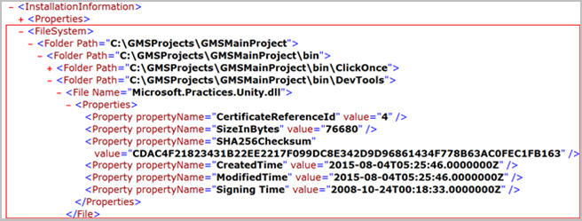 |
- Certificates
- Contains all the certificates found in the files of the folders active project, GMSMainProject, and the WinCC-OA folder with their details grouped under the CertificateReferenceId.
- The details for the certificate include: thumb print, serial number, certificate Issuer, certificate validity period from and to, subject, and the chain validity status is displayed. If the SigningCertificateVerfification is valid, no value for descriptor field is displayed.
If the SigningCertificateVerfification is invalid, the value (reason) is displayed.
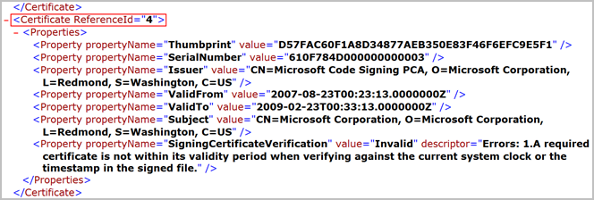 |